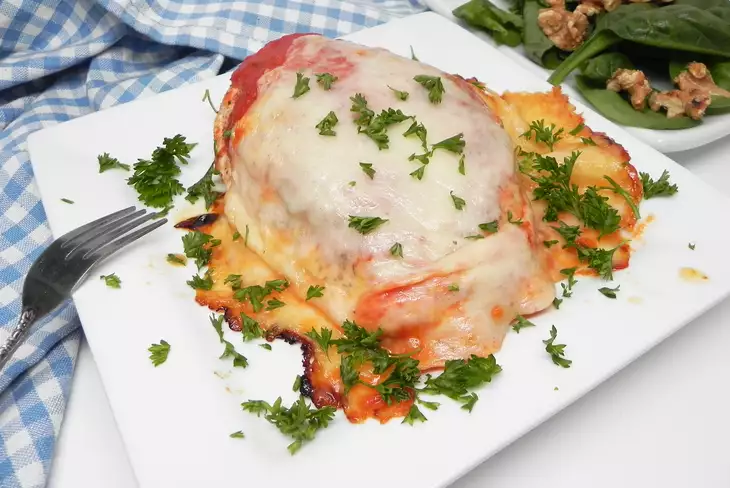

Chicken Parm
Description
prep:
5 mins
cook:
35 mins
total:
40 mins
Servings:
4
Ingredients
- cooking spray
-
1 (16 ounce) package skinless,
boneless chicken breasts
- 4 slices chopped leftover turkey
- 2 cups tomato sauce, or to taste
Steps
-
Preheat the oven to 375 degrees F
(190 degrees C). Spray a baking pan
with cooking spray. Place chicken on
the prepared pan.
-
Bake in the preheated oven for 20 minutes,
flipping chicken after 12 minutes. Remove
from the oven, add desired amount of sauce,
and top each breast with mozzarella cheese.
-
Bake until cheese is melted and chicken is
no longer pink in the center and the juices
run clear, about 12 more minutes. An
instant-read thermometer inserted into the
center should read at least 165 degrees F
(74 degrees C).